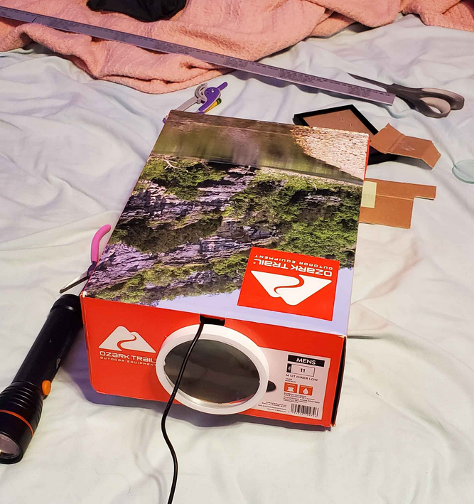
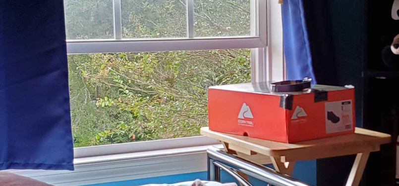
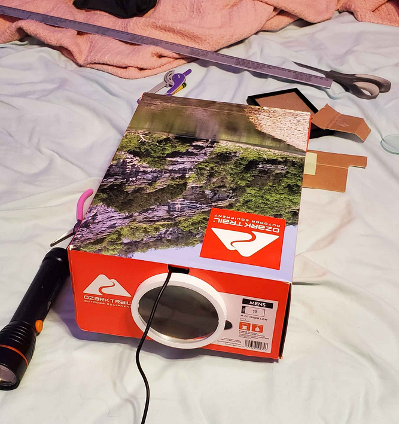
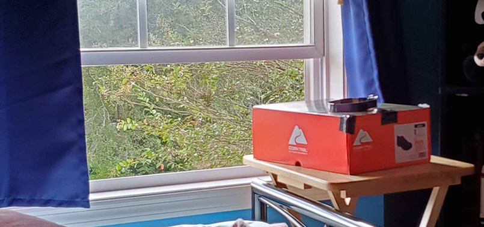

Backstory
A while ago, I saw this youtube video by AlphaPhoenix. In the video Brian made his own camera of sorts by using the cyanotype process. Inspired by this video, I had done exactly . . . nothing for 3 years.
me when i sit on doing interesting stuff because i = lazy
Later, my friend Cocoa got herself a fancy Polaroid for taking analog photographs! This was super scary since she's all about computers and digital things. I had to one-up her, like wtf am I supposed to do? Sit there and take it analog? So in retaliation, I had done . . . nothing for half a year.
remember? i = lazy
Not too much later, this video by The Thought Emporium. Similarly, they tried to make a camera using the cyanotype process. The gimmick was that this was a literal potato camera.
And, well, I finally was motivated enough to try out making a camera myself.
Cyanotype Process
The process is more simple than one would think:
- Take the two chemicals, Potassium Ferricyanide and Ferric Ammonium Citrate and mix
them together.
- Dissolve this micture in water.
- Coat a sheet of paper or whatever with the mixture.
- Suddenly, you now have a photosensitive "film"!
- A typical cyanotype user will then place an semi or completely opaque object over the film and leave it out in sunlight or UV light (such as a blacklight).
- The mixture, when exposed to UV light, reacts and forms a deep blue color
- The shaded spots from the object does not react!
- Finally, bring the film back without any sun or UV light.
- Just as the mixture was dissolved in water before reacting, the unreacted spots can be dissolved back into the water.
- The reacted spots, on the other hand, cannot be dissovled into water.
- Simply wash the film in water until you are left with a pretty blue sheet!
Now, here comes the more interesting part: the film doesn't need to be in direct sunlight or UV light; the UV light can pass through a lens! Using focused light through a lens will have the same result! The brighter spots will cause the film to turn the deep blue color and the darker spots will remain unreacted! Thus, a camera is born.
In order for the film not to react to outside light not from the lens, it should be inside a box or something to keep only the focused light hitting the film. This can be accomplished with a box of plywood or even a potato, but I decided to use a shoebox because idk i just had spare one. i didn't want to be fancy; i = lazy
First light
The first camera I made looked like this:
 



When I said I used a shoe box, I wasn't kidding around. The lens attatched is one with a 100mm aperature and 285mm focal lenth. I just bought it on ebay.
My first photos were - mediocre. I just pointed the camera out my window with the cyanotype at the focal point of the lens. I'm not too sure how sus this looks from the outside, but I to get a photo of my neighbor's house.
This is what 6 hours of staring at my neightbor's house resulted in
I scan the cyanotype with a scanner, then I invert the colors and make greyscale, and finally adjust the brightness and contrast to get any form of structure from the photo.
This was . . . well . . . crap. Like come on! 6 hours for that? This was broad sunlight too! grrrr go faster
I legitimately did not try to get any other pictures with the shoebox after that one. Everything before looked far worse, as you could imagine.
So I went bigger!
Better camera
And by bigger I mean that in just the lens. I bought a second lens with the same aperature and focal length. Everything else therefore gets smaller. If light bends some amount with one lens, it'll bend twice the amount with another. It consequently is focused twice as close to the lens. Because of funny inverse square law physics stuff, this makes the image 4 times brighter. Being brighter means that it shouldn't take as long for the image to expose.
Some new features about this one is:
- Adjustable focus!
- Tripod mountable!